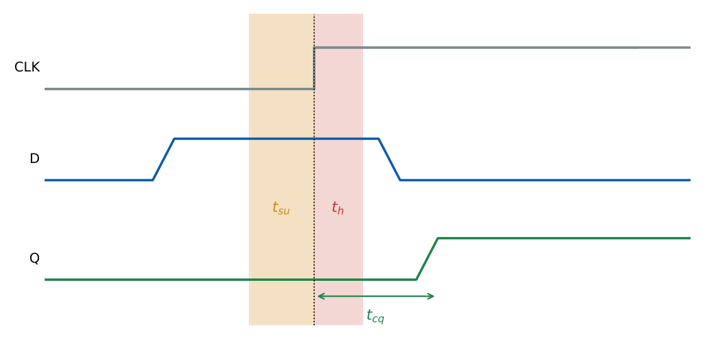

Timing: Setup, Hold, Clock Skew and Pipelining
In this chapter
Maximum clock frequency between two registers, hold-time checks with clock skew, and the speed-up from pipelining. Numerical problems with \(t_{cq}\), \(t_{su}\), \(t_h\) and gate delays appear regularly.
11.1 Definitions

- Setup time \(t_{su}\): minimum time the data must be stable before the active clock edge.
- Hold time \(t_h\): minimum time the data must stay stable after the edge.
- Clock-to-Q delay \(t_{cq}\): delay from the active edge to a valid output.
- Clock skew \(\delta\): difference in clock arrival times between the capturing and launching flip-flops. Take \(\delta>0\) when the capture clock arrives later than the launch clock.
11.2 Timing constraints between two registers
For a launch flip-flop \(\to\) combinational logic \(\to\) capture flip-flop on the same clock:
Setup (limits the clock period): \(\;T\ge t_{cq}+t_{logic,max}+t_{su}-\delta\), so \(f_{max}=\dfrac1{t_{cq}+t_{logic,max}+t_{su}-\delta}\).
Hold (independent of the clock period): \(\;t_{cq,min}+t_{logic,min}\ge t_h+\delta\).
Setup slack \(=T-(t_{cq}+t_{logic,max}+t_{su}-\delta)\); hold slack \(=t_{cq,min}+t_{logic,min}-t_h-\delta\). Negative slack is a violation.
- A setup violation is cured by slowing the clock, reducing logic delay or retiming.
- A hold violation cannot be cured by changing the clock frequency; insert delay (buffers) in the short data path, reduce skew, or use faster-hold flip-flops.
- Positive skew (\(\delta>0\)) helps setup but hurts hold; negative skew does the opposite.
\(t_{cq}=0.5\,\)ns, \(t_{su}=0.3\,\)ns, \(t_h=0.1\,\)ns, \(t_{logic}\in[0.4,\,2.2]\,\)ns.
No skew: \(T\ge0.5+2.2+0.3=3.0\,\)ns, \(f_{max}=333.3\,\)MHz. Hold: \(0.5+0.4=0.9\ge0.1\) \(\checkmark\).
With \(\delta=+0.2\,\)ns: \(T\ge2.8\,\)ns, \(f_{max}=357.1\,\)MHz; hold: \(0.9\ge0.1+0.2=0.3\) \(\checkmark\).
With \(\delta=+1.0\,\)ns: setup improves further, but hold requires \(0.9\ge1.1\): violated; add at least \(0.2\,\)ns delay in the short path.
A shift register has \(t_{logic}\approx0\). Hold requires \(t_{cq,min}\ge t_h+\delta\); so a flip-flop with \(t_{cq}=0.4\,\)ns and \(t_h=0.3\,\)ns tolerates skew up to \(0.1\,\)ns.
11.3 Input and output timing
For a signal arriving from outside, the external delay must satisfy the same inequality with the external launch time. For a synchronous system with period \(T\) and an input arriving \(t_{in}\) after the launching edge, the remaining budget for the internal logic is \(T-t_{in}-t_{su}\).
11.4 Metastability and synchronisers
If the data changes inside the setup–hold window the flip-flop can enter a metastable state with an output between the logic levels for an unpredictable time. The probability that it has not resolved within \(t_r\) falls exponentially: \[ \text{MTBF}=\frac{e^{\,t_r/\tau}}{T_0\,f_{clk}\,f_{data}} . \] A two-flip-flop synchroniser gives a full extra clock period \(t_r\approx T-t_{su}-t_{cq}\) for resolution; it is the standard way to bring an asynchronous input or a signal from another clock domain into a clock domain. Multi-bit buses need handshakes or FIFOs, not per-bit synchronisers.
11.5 Pipelining
Insert registers to split a long combinational path into stages. If the original delay is \(D\) and there are \(k\) equal stages, with register overhead \(t_{reg}=t_{cq}+t_{su}\):
Clock period \(T_{pipe}=\dfrac Dk+t_{reg}\) (for balanced stages); the slowest stage sets the period.
Throughput \(=1/T_{pipe}\); latency \(=k\,T_{pipe}\) (increases).
Speed-up \(=\dfrac{D+t_{reg}}{D/k+t_{reg}}\ <k\); for \(n\) operations total time \((k+n-1)T_{pipe}\).
\(D=12\,\)ns, \(t_{reg}=1\,\)ns, three equal stages: \(T=4+1=5\,\)ns; unpipelined \(T=13\,\)ns; speed-up \(=13/5=2.6\); latency \(15\,\)ns.
11.6 Latch-based design and time borrowing
In a two-phase latch design a stage may borrow time from the next stage if its data arrives while the following latch is still transparent, balancing unequal stage delays; the constraint becomes a total-loop delay rather than a per-stage one.
(i) Hold violations are independent of the clock frequency. (ii) Setup uses the maximum logic delay, hold uses the minimum. (iii) Skew sign: capture later helps setup and hurts hold. (iv) Pipelining raises throughput but not single-operation latency. (v) A synchroniser reduces but never eliminates the probability of metastability.
Write \(T_{min}=t_{cq}+t_{logic,max}+t_{su}\mp\delta\) first, then \(f=1/T\). For hold, check \(t_{cq}+t_{logic,min}-t_h-\delta\ge0\). For balanced pipelines divide the logic delay by the number of stages and add the register overhead once.
11.7 GATE problems
Q1. A hold-time violation can be removed by (A) lowering the clock frequency (B) adding delay in the data path (C) increasing the supply voltage (D) none of these.
Q2. The maximum clock frequency of a synchronous path depends on (A) \(t_{cq}+t_{logic,max}+t_{su}\) (B) \(t_h\) only (C) \(t_{logic,min}\) (D) \(t_{su}-t_h\).
Q3. A metastable output is (A) always 1 (B) always 0 (C) at an intermediate level for an unpredictable time (D) a clock glitch.
Q4. Pipelining a combinational block into \(k\) stages does what to latency? (A) reduces it (B) increases it (C) leaves it unchanged (D) divides by \(k\).
Answers: Q1 (B). Q2 (A). Q3 (C). Q4 (B), because of register overhead per stage.
Q5. \(t_{cq}=0.6\,\)ns, \(t_{su}=0.4\,\)ns, longest logic path \(3.0\,\)ns. The maximum clock frequency (MHz): (A) 200 (B) 250 (C) 278 (D) 333.
Q6. With \(t_{cq,min}=0.4\,\)ns, \(t_h=0.3\,\)ns, \(t_{logic,min}=0.1\,\)ns and capture-clock skew \(\delta=+0.5\,\)ns the additional minimum delay needed in the short path (ns): (A) 0.1 (B) 0.2 (C) 0.3 (D) 0.5.
Q7. A 3-stage balanced pipeline replaces a block of delay \(12\,\)ns; \(t_{reg}=1\,\)ns. Throughput improvement over the unpipelined design: (A) 2.6 (B) 2.4 (C) 3.0 (D) 3.25.
Answers: Q5 (B): \(T=4.0\,\)ns. Q6 (C): \(0.3+0.5-0.4-0.1=0.3\). Q7 (A): \(13/5=2.6\).
Q8. A path has \(t_{cq}=0.5\), \(t_{su}=0.3\) and logic \(2.2\) (all ns) with \(\delta=+0.2\) ns (capture later). Maximum frequency (MHz, one decimal): .
Q9. Two directly connected flip-flops with \(t_{cq,min}=0.35\,\)ns and \(t_h=0.15\,\)ns. Maximum tolerable skew (ns): .
Q10. A balanced \(k\)-stage pipeline processes \(n=100\) operations at period \(T=5\,\)ns with \(k=3\). Total time (ns): .
Answers: Q8: \(T=2.8\) ns, \(357.1\) MHz. Q9: \(0.2\) ns. Q10: \((k+n-1)T=102\times5=510\) ns.
Q11. Which are true? (A) Positive skew (capture later) helps setup. (B) Hold violations depend on the clock period. (C) A two-flop synchroniser reduces metastability probability. (D) Setup analysis uses the maximum delay.
Answers: Q11: (A), (C), (D).
T1. Define setup and hold time. T2. Is a hold violation fixed by slowing the clock? T3. Speed-up of a 5-stage ideal pipeline (no overhead).
Answers: T1: stable before/after the edge. T2: No. T3: 5.
- Setup: \(T\ge t_{cq}+t_{logic,max}+t_{su}-\delta\). Hold: \(t_{cq}+t_{logic,min}\ge t_h+\delta\).
- Hold is fixed by delay insertion, not by slower clocks.
- Metastability: two-flop synchroniser; MTBF grows exponentially with resolution time.
- Pipeline: \(T=D/k+t_{reg}\); latency up, throughput up.